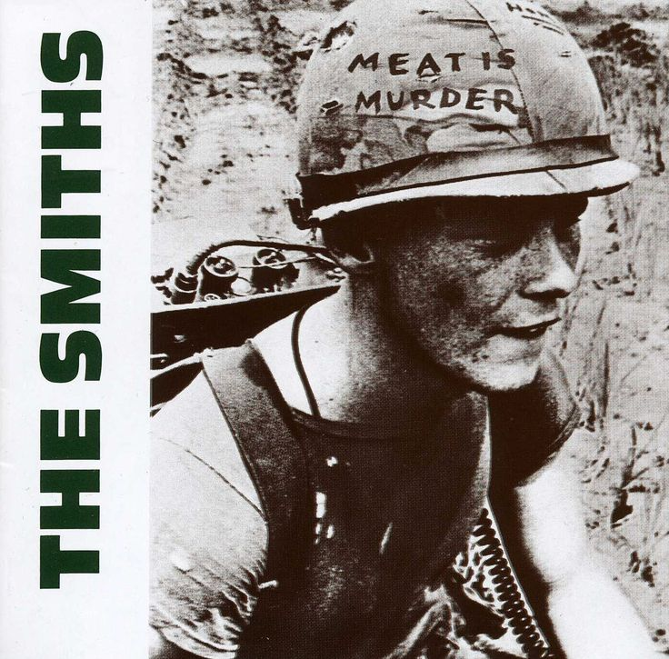
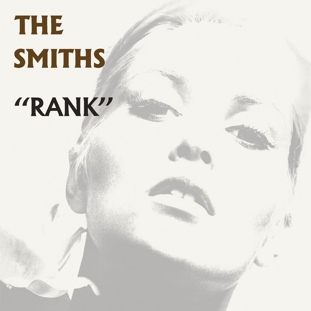

Discography
Albums
"The Smiths® - Self Titled"
February/April 1984

- Reel Around The Fountain
- You've Got Everything Now
- Miserable Lie
- Pretty Girls Make Graves
- The Hand That Rocks The Cradle
- This Charming Man
- Still Ill
- Hand In Glove
- What Difference Does It Make?
- I Don't Owe You Anything
- Suffer Little Children
"Meat Is Murder"
February 1985

- The Headmasters Ritual
- Rushlome Ruffians
- I Want The One I Can't Have
- What She Said
- That Joke Isn't Funny Anymore
- How Soon Is Now?
- Nowhere Fast
- Well I Wonder
- Barbarism Begins At Home
- Meat Is Murder
"The Queen Is Dead"
June 1986

- The Queen Is Dead
- Frankly, Mr. Shankly
- I Know It's Over
- Never Had No One Ever
- Cemetry Gates
- Bigmouth Strikes Again
- The Boy With The Thorn In His Side
- Vicar In A Tutu
- There Is A Light That Never Goes Out
- Some Girls Are Bigger Than Others
"Strangeways Here We Come"
September 1987

- A Rush And A Push And The Land Is Ours
- I Started Something I Couldn't Finish
- Death Of A Disco Dancer
- Girlfriend In A Coma
- Stop Me If You Think You've Heard This One Before
- Last Night I Dreamt That Somebody Loved Me
- Unhappy Birthday
- Paint A Vulgar Picture
- Death At One's Elbow
- I Won't Share You
"Rank - Live Album"
September 1988

- The Queen Is Dead
- Panic
- Vicar In A Tutu
- Ask
- His Latest Flame/Rusholme Ruffians
- The Boy With The Thorn In His Side
- Rubber Ring/What She Said
- Is It Really So Strange?
- Cemetry Gates
- London
- I Know It's Over
- The Draize Train
- Still Ill
- Bigmouth Strikes Again
Compilations
"Hatful Of Hollow"
November 1984

- William, It Was Really Nothing
- What Difference Does It Make? (Peel Session 31/5/83)
- These Things Take Time (Jensen Session 4/7/83)
- This Charming Man (Peel Session 21/5/83)
- How Soon Is Now?
- Handsome Devil (Peel Session 31/5/83)
- Hand In Glove
- Still Ill (Peel Session 21/5/83)
- Heaven Knows I'm Miserable Now
- This Night Has Opened My Eyes (Peel Session 21/9/83)
- You've Got Everything Now (Jensen Session 4/7/83)
- Accept Yourself (Jensen Session 5/9/83)
- Girl Afraid
- Back To The Old House (Peel Session 21/9/83)
- Reel Around The Fountain (Peel Session 31/5/83)
- Please, Please, Please, Let Me Get What I Want
"The World Won't Listen"
February 1987

- Panic
- Ask
- London
- Bigmouth Strikes Again
- Shakespeare's Sister
- There Is A Light That Never Goes Out
- Shoplifters Of The World Unite
- The Boy With The Thorn In His Side
- Money Changes Everything
- Asleep
- Unloveable
- Half A Person
- Stretch Out And Wait (alternate version)
- That Joke Isn't Funny Anymore (edited)
- Oscillate Wildly
- You Just Haven't Earned It Yet, Baby
- Rubber Ring
- Golden Lights
"Louder Than Bombs"
March 1987

- Is It Really So Strange? (Peel Session 17/12/86)
- Sheila Take A Bow
- Shoplifters Of The World Unite
- Sweet And Tender Hooligan (Peel Session 17/12/86)
- Half A Person
- London
- Panic
- Girl Afraid
- Shakespeare's Sister
- William, It Was Really Nothing
- You Just Haven't Earned It Yet, Baby (slightly remixed)
- Heaven Knows I'm Miserable Now
- Ask
- Golden Lights
- Oscillate Wildly
- These Things Take Time
- Rubber Ring
- Back To The Old House
- Hand In Glove
- Stretch Out And Wait
- Please, Please, Please, Let Me Get What I Want
- This Night Has Opened My Eyes (Peel Session 21/9/83)
- Unloveable
- Asleep